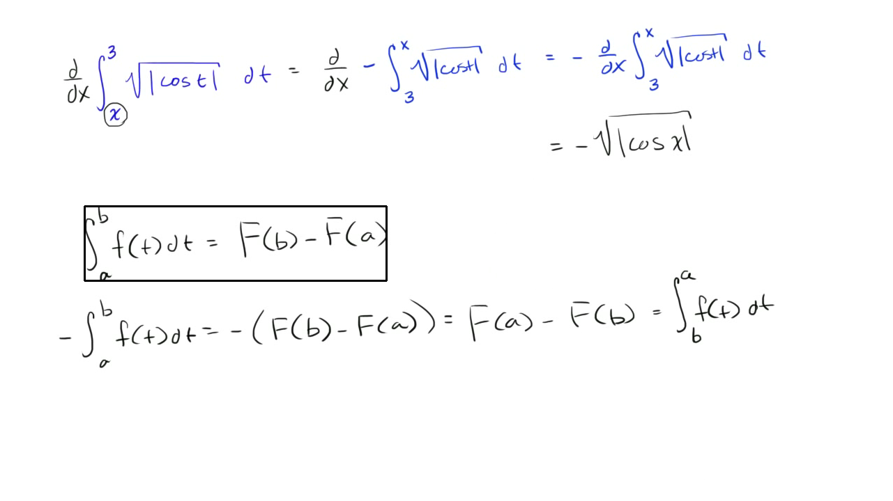

The first figure following the title shows a panoramic view of the entire lecture board. The following note presents figures and transcript in the order they appear in the lecture.
Swapping the bounds for definite integral
We want to find the derivative with respect to x of all of this business right over here. And you might guess-- and this is definitely a function of x. x is one of the boundaries of integration for this definite integral.
And you might say, well, it looks like the fundamental theorem of calculus might apply, but I'm used to seeing the x, or the function x, as the upper bound, not as the lower bound. How do I deal with this? And the key realization is to realize what happens when you switch bounds for a definite integral. And I'll do a little bit of an aside to review that.

So if I'm taking the definite integral from a to b of f of t, dt, we know that this is capital F, the antiderivative of f, evaluated at b minus the antiderivative of F evaluated at a.
This is corollary to the fundamental theorem, or it's the fundamental theorem part two, or the second fundamental theorem of calculus. This is how we evaluate definite integrals. Now, let's think about what the negative of this is.
So the negative of that-- of a to b of f of t, dt, is just going to be equal to the negative of this, which is equal to-- so it's the negative of f of b minus f of a, which is equal to capital F of a minus capital F of b.
All I did is distribute the negative sign and then switch the two terms.
But this right over here is equal to the definite integral from, instead of a to b, but from b to a of f of t, dt.
So notice, when you put a negative, that's just like switching the signs or switching the boundaries. Or if you switch the boundaries, they are the negatives of each other. So we can go back to our original problem.
We can rewrite this as being equal to the derivative with respect to x of-- instead of this, it'll be the negative of the same definite integral but with the boundaries switched-- the negative of x with the upper boundary is x, the lower bound is 3 of the square root of the absolute value of cosine t, dt, which is equal to-- we can take the negative out front-- negative times the derivative with respect to x of all of this business. I should just copy and paste that, so I'll just copy and paste. Let me-- and paste it. So times the derivative with respect to x of all that, and now the fundamental theorem of calculus directly applies.
This is going to be equal to-- we deserve a drum roll now. This is going to be equal to the negative-- can't forget the negative. And the fundamental theorem of calculus tells us that that's just going to be this function as a function of x.
So it's going to be negative square root of the absolute value of cosine of not t anymore, but x.